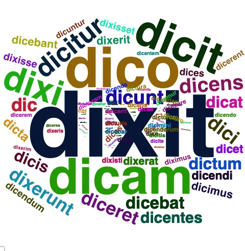
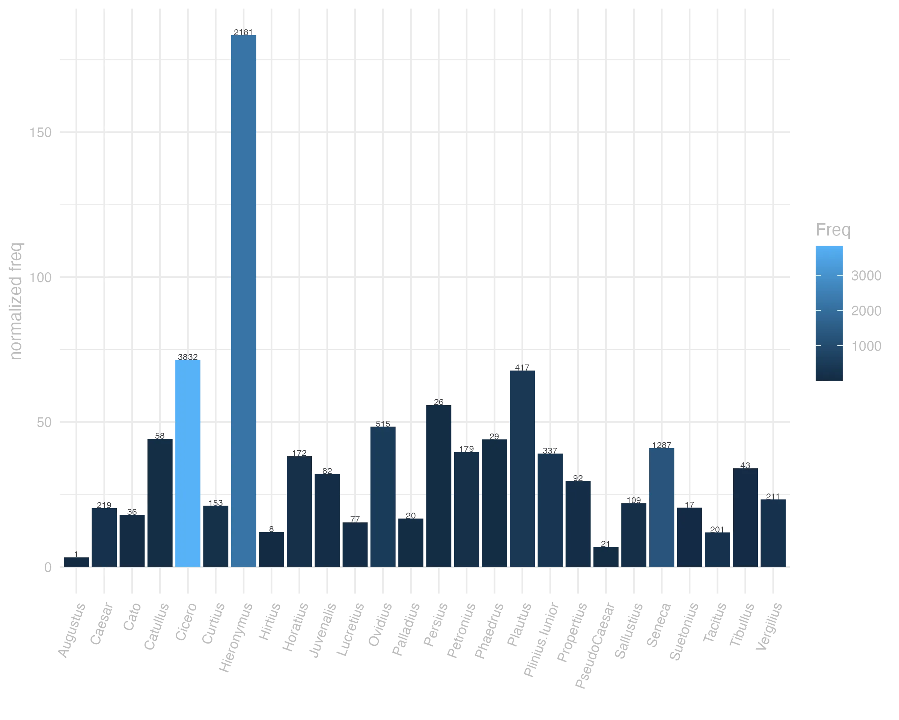
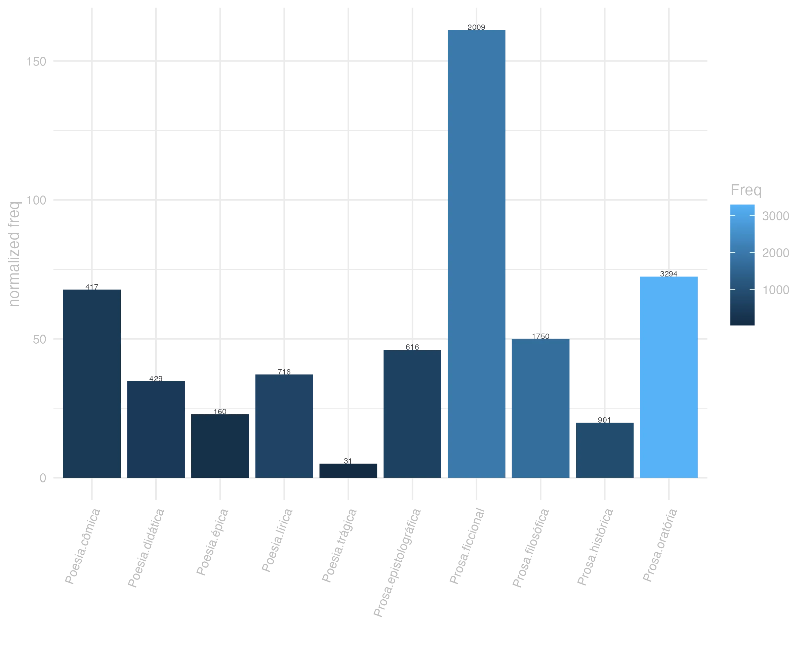
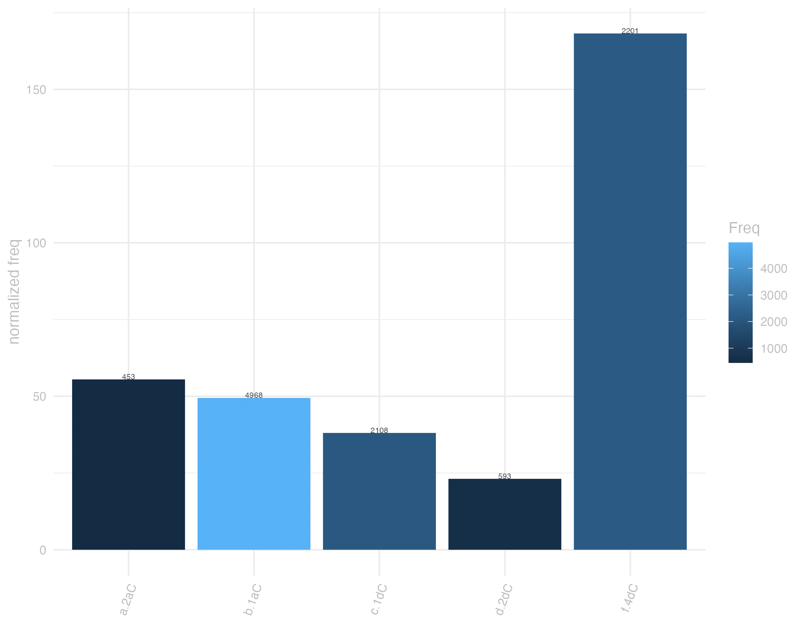

10 dico
10.0.0.1 forma
Classe: verbo
Flexão: 3ª conjugação (sem vogal temática)
F Dicassis Plaut. por Dicas
F Dice Plaut. por Dic
V Dico -is Vide Dos.
F Dico -is -ixi -ictum -cere
F Dixi pret. de Dico
F Dixti Cic. por Dixisti
deico, dico presente | indicativo | 1ª pessoa singular | voz ativa
deicere, dicere presente | infinitivo | ativo
deicet, dicet futuro | indicativo | 3ª pessoa singular | voz ativa
deixi, dixi, deixsi pretérito perfeito | indicativo | 1ª pessoa singular | voz ativa
dictum particípio passado | nominativo neutro singular
dicturum particípio futuro | nominativo neutro singular

10.0.0.2 significado
Grupo semântico: Discurso, Oratória
F 1 dizer, fallar. Cic.
V 1 dizer, orar, fallar
F 2 eleger. Liv.
V 2 Pro promittere aliquid alicui.
lexemas: afirmar, alegar, declarar
categoria: comunicação
valências: [ACT,PAT]
synset_id: 01016002-v
lexemas: afirmar, asseverar, jurar
categoria: comunicação
conceito: declarar ou afirmar solenemente e formalmente como verdade
valências: [ACT,PAT] ou [ACT,ADDR,PAT]
synset_id: 01011031-v
lexemas: articular, dizer, enunciar, falar, pronunciar
categoria: comunicação
conceito: falar, pronunciar, ou proferiri de uma certa maneira
valências: [ACT,PAT] ou [ACT,MANN,PAT] ou [ACT]
synset_id: 00978549-v
lexemas: chamar
categoria: cognição
conceito: anunciar ou proferir em voz alta
valências: [ACT,PAT]
synset_id: 00738747-v
lexemas: chamar
categoria: comunicação
valências: [ACT,PAT] ou [ACT,PAT,EFF]
synset_id: 00753881-v
lexemas: chamar, convocar
categoria: comunicação
conceito: solicitar, requerer, comandar algo
valências: [ACT,PAT] ou [ACT,PAT,EFF] ou [ACT,INTT,PAT]
synset_id: 00792471-v
lexemas: chamar, denominar, nomear
categoria: comunicação
conceito: atribuir um nome específico (geralmente adequado)
valências: [ACT,EFF,PAT] ou [ACT,PAT]
synset_id: 01028748-v
lexemas: comandar, ditar, ordenar, prescrever, receitar
categoria: comunicação
valências: [ACT,PAT] ou [ACT,PAT,ADDR] ou [ACT,PAT,EFF] ou [ACT,ADDR,PAT]
synset_id: 00747135-v
lexemas: contar, dizer, falar
categoria: comunicação
conceito: expressar em palavras
valências: [ACT,PAT] ou [ACT,ADDR,PAT] ou [ACT]
synset_id: 01009240-v
lexemas: contar, informar
categoria: comunicação
conceito: fazer com que algo seja conhecido
valências: [ACT,PAT] ou [ACT,PAT,ADDR]
synset_id: 00952524-v
lexemas: contar, narrar, recontar
categoria: comunicação
conceito: narrar ou dar um relato detalhado sobre
valências: [ACT,PAT] ou [ACT,ADDR,PAT]
synset_id: 00953216-v
lexemas: conversar, dizer, falar, proferir, verbalizar
categoria: comunicação
conceito: expressar com a fala;
valências: [ACT,PAT] ou [ACT]
synset_id: 00941990-v
lexemas: declarar
categoria: comunicação
valências: [ACT,PAT] ou [ACT,ADDR,PAT]
synset_id: 00820801-v
lexemas: dedurar, falar demais
categoria: comunicação
conceito: revelar informações
valências: [ACT,PAT]
synset_id: 00952841-v
lexemas: dialogar, falar
categoria: comunicação
conceito: trocar idéia; falar com
valências: [ACT,PAT] ou [ACT] ou [ACT,ADDR] ou [ACMP,ACT]
synset_id: 00962447-v
lexemas: dizer, falar
categoria: comunicação
conceito: expressar em voz alta
valências: [ACT,PAT]
synset_id: 00979870-v
lexemas: dizer, falar, usar a lingua
categoria: comunicação
conceito: uso da linguagem
valências: [ACT] ou [ACT,PAT]
synset_id: 00963570-v
lexemas: dizer, recitar
categoria: comunicação
conceito: Recitar ou repetir um texto fixo
valências: [ACT,PAT]
synset_id: 00945499-v
lexemas: impetrar, intimar, mandar, ordenar
categoria: comunicação
conceito: dar instruções a ou diretamente a alguém para fazer algo, com autoridade
valências: [ACT,PAT] ou [ACT,PAT,ADDR] ou [ACT,ADDR,PAT]
synset_id: 00746718-v
lexemas: mencionar, referir
categoria: cognição
conceito: ter em mente, se referir a
valências: [ACT,REG] ou [ACT,PAT]
synset_id: 00730052-v
lexemas: nomear
categoria: relação social
valências: [ACT,PAT] ou [ACT,EFF,PAT]
synset_id: 02396205-v
lexemas: supor, afirmar, declarar, dizer
categoria: comunicação
conceito: Afirmar como sua opinião ou julgamento
valências: [ACT,PAT] ou [ACT,REG]
synset_id: 01009821-v
F 1 aequi bonique dicere Ter. Fallar como deve ser e pede a razão.
V 1 conuenienter rationi dicere fallar conforme a razaõ
V X dicere alicui diem citar
V X dicere diem determinar, e assignar dia certo
F X dicere diem alicui Cic Assinar dia para apparecer em juizo
F X dicere salutem Cic Saudar, enviar saude
V X nomen dicere pôr nome
V X sacramentum, uel sacramento dicere jurarem os soldados de defenderem a Republica
V X sententiam, uel pro sententia dicere dizer seu parecer
V X testimonium uel pro testimonio dicere testificar, depor com testemunho
10.0.0.3 uso
Ranking de frequência: 23 ª posição neste corpus
dicta est a me causa iudices et perorata Cic.Cael.70
A causa foi dita por mim, juízes, e concluída. JDD
nunc ante quam ad sententiam redeo de me pauca dicam Cic.Catil.4.20.1
Agora, antes de voltar ao parecer, direi umas poucas coisas sobre mim mesmo. JDD
sed tamen uenenum unde fuerit quem ad modum paratum sit non dicitur Cic.Cael.61
Contudo não se diz onde estava o veneno e de que modo foi preparado. JDD
dixit hoc item comes P. Clodi C. Clodius Cic.Mil.46
Disse o mesmo Caio Clódio, acompanhante de Públio Clódio. JDD
sed an uere audieris an uere dixeris effectu proba Sen.Ep.24.15
mas se ouviste com verdade, ou disseste com verdade, comprova com as obras. JDD
in eadem causa fuerunt Usipetes et Tenctheri quos supra diximus Caes.Gal.4.4.1
Na mesma situação estiveram os usípites e os tencteros, que mencionamos acima. JDD
nulli enim nisi audituro dicendum est Sen.Ep.29.1
pois a ninguém se deve ensinar, a não ser que esteja disposto a ouvir. JDD
refice illum et mitte in senatum eandem sententiam dicet Sen.Prov.3.9
Reanima-o e manda-o ao senado: dirá a mesma opinião. JDD
de superiore coniuratione satis dictum Sal.Cat.19.6
Sobre a primeira conjuração é suficiente o que foi dito. JDD
cur dixisti testimonium in alios Cic.Sul.48


